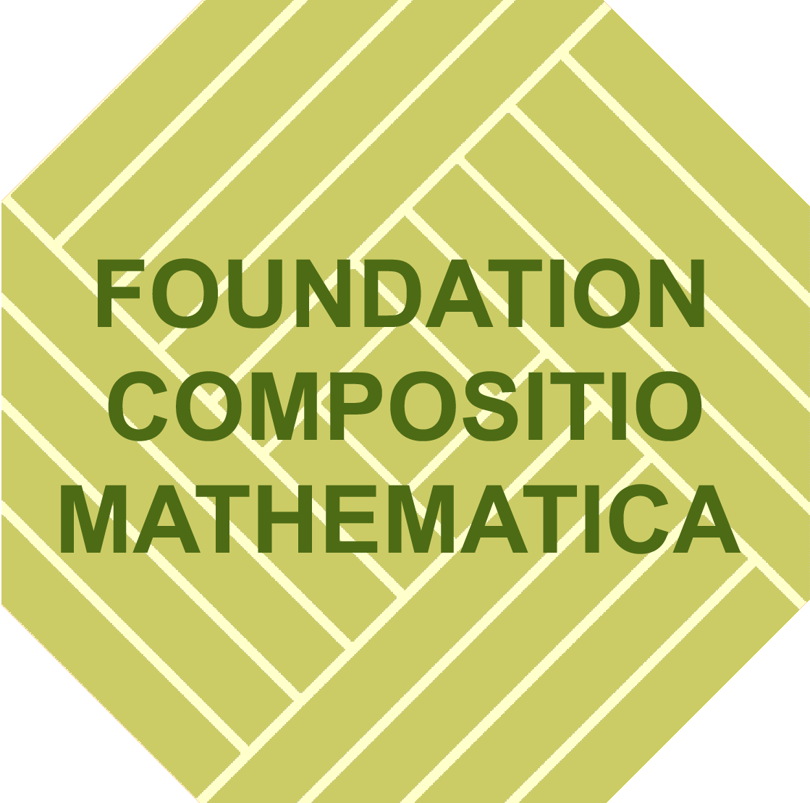
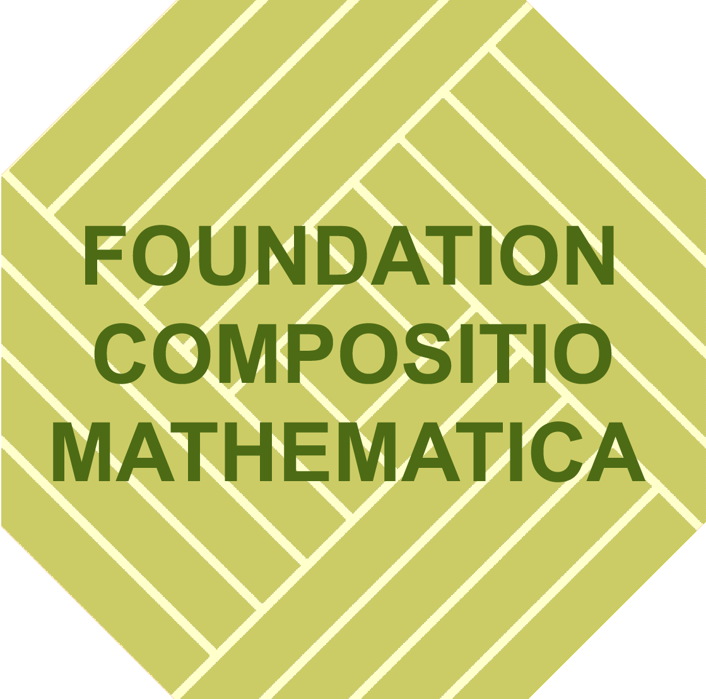

The interplay of geometric group theory and K-theory
June 24 - 28, 2024, Southampton
The overall aim of the workshop is to generate new research opportunities at the intersection of geometric group theory and algebraic K-theory.
Besides the lectures from the invited speakers below, there will be an opportunity for early career researchs to give short talks.
Speakers:
Arthur Bartels (Münster)
Christian Bönicke (Newcastle)
Martin Bridson (Oxford)
Ulrich Bunke (Regensburg)
Emanuele Dotto (Warwick)
Ian Hambleton (McMaster)
Renee Hoekzema (VU Amsterdam)
Peter Kropholler (Southampton)
Mona Merling (UPenn)
Nansen Petrosyan (Southampton)
Julia Semikina (Lille)
Christoph Winges (Regensburg)
Nick Wright (Southampton)
Inna Zakharevich (Cornell)
Organizers:
Daniel Kasprowski, Ian Leary, Wolfgang Lück
Hosted by
The conference is financially supported by:


 
